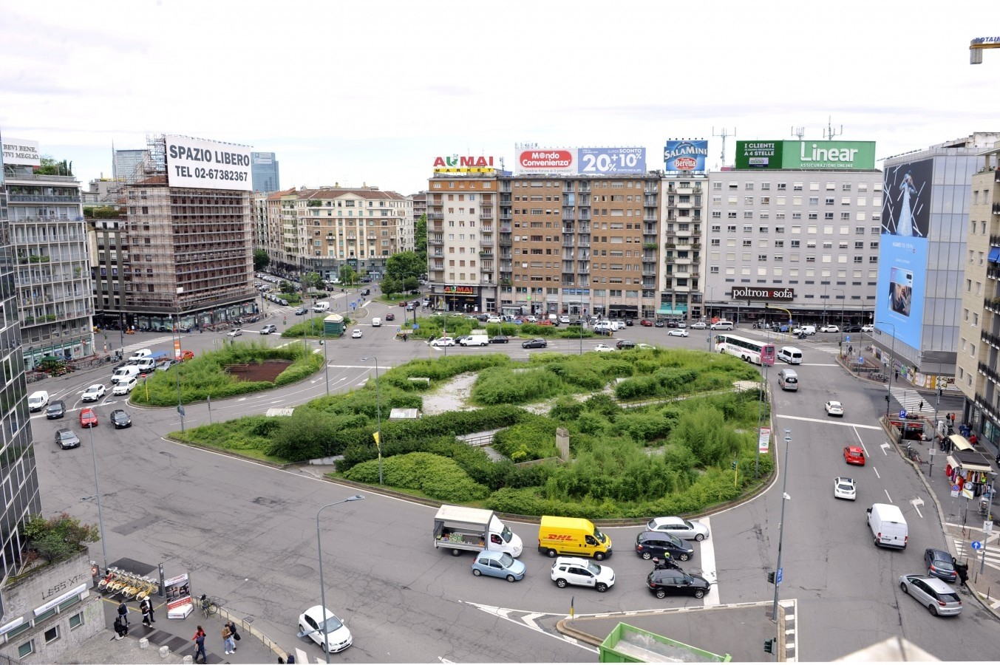

<!doctype html>
<html lang="en">

<head>
    <meta charset="utf-8">
    <meta name="viewport" content="width=device-width, initial-scale=1">
    <title>Piazze di Roma</title>
    <link href="https://cdn.jsdelivr.net/npm/bootstrap@5.3.0-alpha3/dist/css/bootstrap.min.css" rel="stylesheet"
        integrity="sha384-KK94CHFLLe+nY2dmCWGMq91rCGa5gtU4mk92HdvYe+M/SXH301p5ILy+dN9+nJOZ" crossorigin="anonymous">
</head>

</html>

<body>
    <div class="container-fluid">
    <div w3-include-html="menu.html"></div>  
   
        <div class="card my-2 mx-auto" style="max-width: 1280px;" id="popolo">
            <div class="row g-0">
                <div class="col-md-8">
                    
                </div>
                <div class="col-md-4">
                    <div class="card-body">
                        <h2 class="card-title mb-4">Piazzale Loreto</h2>
                        <h4 class="card-subtitle">Milano</h4>
                        <p class="card-text fs-6 lh-base p-2">Durante la Seconda guerra mondiale, nella strage di Piazzale Loreto avvenuta il 10 agosto del 1944, alcuni soldati della Legione Autonoma Mobile Ettore Muti fucilarono quindici partigiani antifascisti sul marciapiede compreso tra viale Andrea Doria e corso Buenos Aires.</p>
                        <p class="card-text fs-6 lh-base p-2">I corpi di Benito Mussolini, che era stato ucciso a Giulino di Mezzegra il 28 aprile 1945, di Claretta Petacci e di altri 18 gerarchi della Repubblica Sociale Italiana, arrivati a Milano la sera stessa, vennero esposti in piazzale Loreto verso le 3 della notte, dove vennero scaricati nello stesso luogo in cui il 10 agosto 1944 erano stati fucilati e lasciati esposti al pubblico i quindici partigiani.</p>
                    </div>
                </div>
            </div>
        </div>        
    </div>
    <script src="import.js"></script>
    <script>includeHTML()</script>
    <script src="https://cdn.jsdelivr.net/npm/bootstrap@5.3.0-alpha3/dist/js/bootstrap.bundle.min.js"
        integrity="sha384-ENjdO4Dr2bkBIFxQpeoTz1HIcje39Wm4jDKdf19U8gI4ddQ3GYNS7NTKfAdVQSZe"
        crossorigin="anonymous"></script>
    <script src="https://cdn.jsdelivr.net/npm/@popperjs/core@2.11.7/dist/umd/popper.min.js"
        integrity="sha384-zYPOMqeu1DAVkHiLqWBUTcbYfZ8osu1Nd6Z89ify25QV9guujx43ITvfi12/QExE"
        crossorigin="anonymous"></script>
</body>

</html>